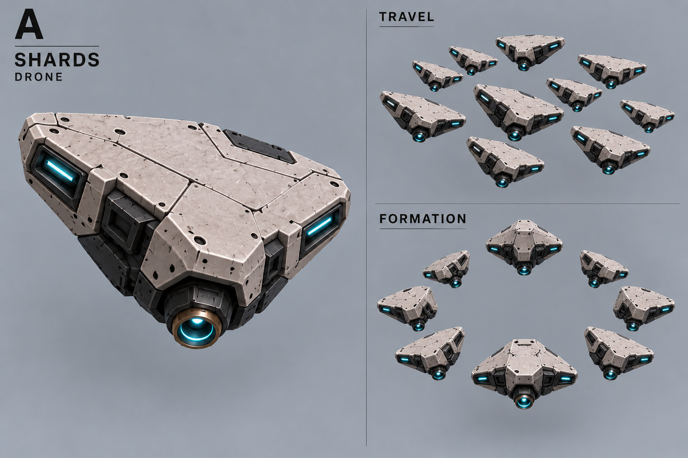
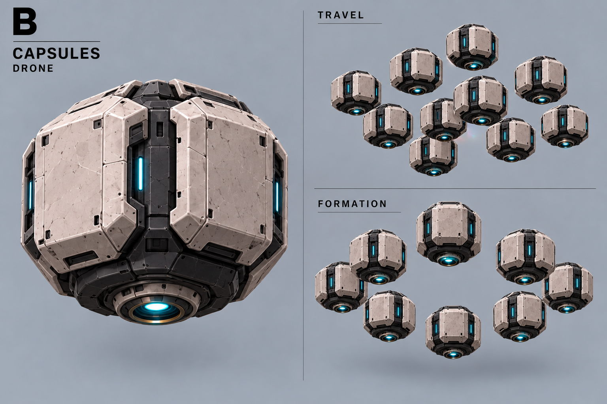
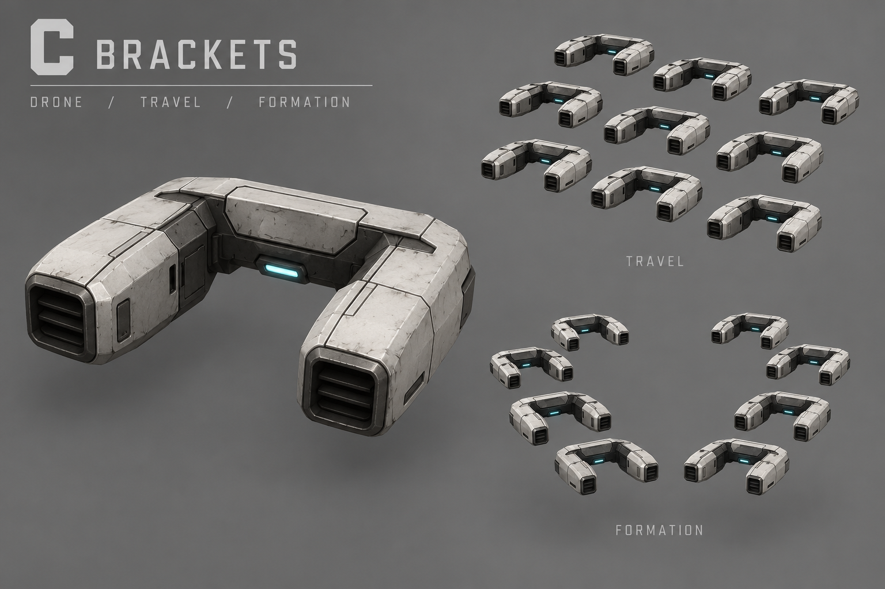
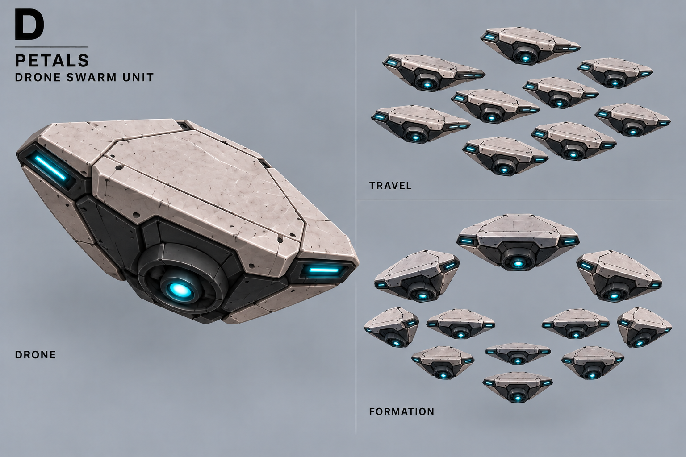
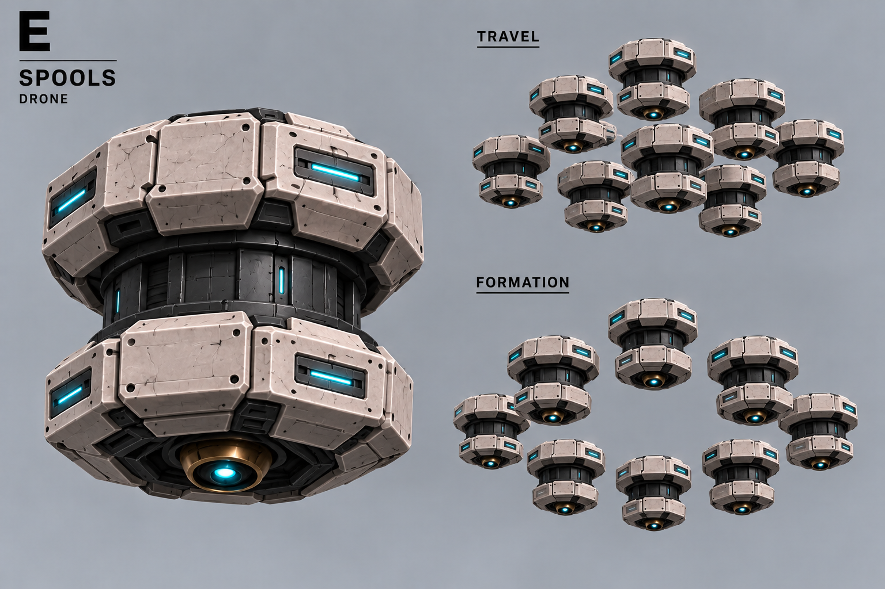
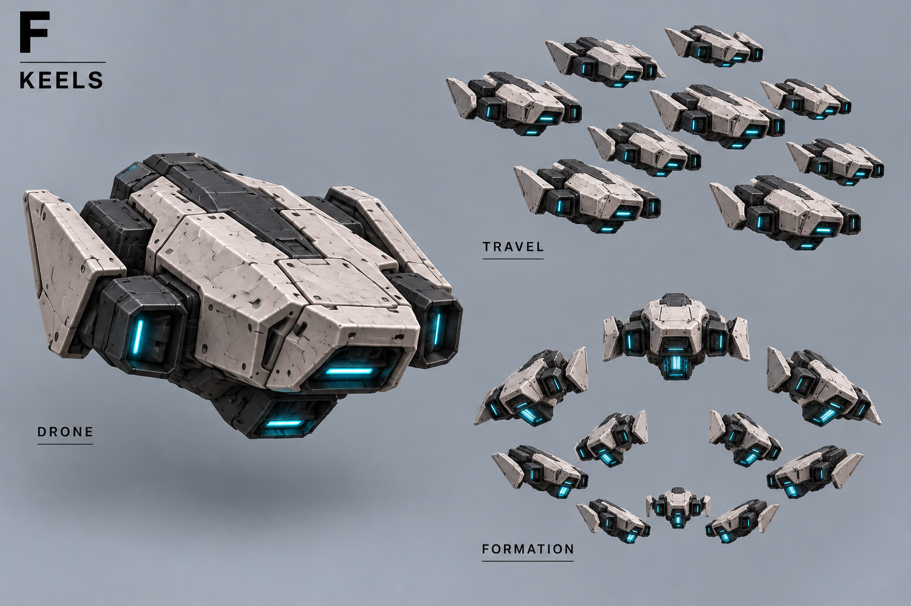

A — Осколки

Один юнит — рой твёрдых малых роботов. На листах: отдельный дрон, полёт, подготовленное построение. Бэклог: разработка отложена, в активный ростер не входит.
Атака после 1,5 с подготовки, по наземной области. Движение прекращает атаку. Число дронов условное; форма излучателей — визуальное предложение.
Все концепты · Описание · Промпты





